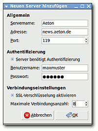

LottaNZB
Dieser Artikel wurde für die folgenden Ubuntu-Versionen getestet:
Dieser Artikel ist mit keiner aktuell unterstützten Ubuntu-Version getestet! Bitte diesen Artikel testen und das getestet-Tag entsprechend anpassen.
Zum Verständnis dieses Artikels sind folgende Seiten hilfreich:
LottaNZB  dient dazu, Dateien automatisiert und vereinfacht aus dem Usenet herunterzuladen. Die NZB-Dateien werden mit Hilfe von Usenet-Suchmaschinen erstellt. LottaNZB integriert sich gut in GNOME, ist aber nicht darauf beschränkt. Das Programm selbst ist ein sog. Frontend, also ein Aufsatz für HellaNZB und vollständig ins Deutsche übersetzt. Die Funktionen sind:
dient dazu, Dateien automatisiert und vereinfacht aus dem Usenet herunterzuladen. Die NZB-Dateien werden mit Hilfe von Usenet-Suchmaschinen erstellt. LottaNZB integriert sich gut in GNOME, ist aber nicht darauf beschränkt. Das Programm selbst ist ein sog. Frontend, also ein Aufsatz für HellaNZB und vollständig ins Deutsche übersetzt. Die Funktionen sind:
Benutzeroberfläche für HellaNZB oder eigenständiger NZB Usenet-Client
Einreihen von NZB-Dateien direkt von Datei-Manager und Web-Browser
Newzbin
-UnterstützungUnterstützung von mehreren Usenet-Servern
Organisieren der Download-Warteschlange und NZB-Dateien per Drag 'n Drop
Bandbreitenbeschränkung
Einen meist kostenpflichtigen Zugang zu den Dateien im Usenet erhält man über einen Usenet-Provider seiner Wahl. Man zahlt entweder pro Datenvolumen oder Flatrate. Die Preise schwanken dabei von wenigen Euro bis zu zweistelligen Beträgen pro Monat.
Installation¶
Das Programm ist in den offiziellen Paketquellen enthalten. Folgendes Paket muss installiert [1] werden:
lottanzb (universe)
 mit apturl
mit apturl
Paketliste zum Kopieren:
sudo apt-get install lottanzb
sudo aptitude install lottanzb
Benutzung¶
Nach der Installation ist LottaNZB bei Ubuntu-Varianten mit einem Anwendungsmenü unter "Internet -> LottaNZB Automatisierter Usenet-Client" zu finden.
Für die Ersteinrichtung, die beim ersten Start automatisch erscheint, sollten wie auf dem Bild zu sehen die Daten für den verwendeten Server hinzugefügt werden.  Der Einrichtungs-Dialog kann auch nachträglich über den Menüeintrag "Bearbeiten -> Einstellungen -> Server" aufgerufen werden. Mehr Informationen zu den verwendbaren Modi von LottaNZB finden sich in der Dokumentation.
Um nun Dateien herunterzuladen, muss die dazu entsprechende NZB-Datei (z.B. für eine Linux-Distributions-Image) über eine spezielle Suchmaschine wie Newzleech , Binsearch.info oder einen Indexierungs-Service wie Newzbin oder NZBMatrix heruntergeladen werden.
Die NZB-Datei wird nun über die "Hinzufügen"-Schaltfläche an LottaNZB gegeben, das die eigentlichen Dateien dann automatisch herunterlädt und entpackt.
Hilfe¶
Sollten in der Dokumentation von LottaNZB über den Menüeintrag "Hilfe" nicht alle Fragen beantwortet werden, so kann über Launchpad Answers eine Frage eingereicht werden, die vom LottaNZB-Team beantwortet wird.
- Erstellt mit Inyoka
-
 2004 – 2017 ubuntuusers.de • Einige Rechte vorbehalten
2004 – 2017 ubuntuusers.de • Einige Rechte vorbehalten
Lizenz • Kontakt • Datenschutz • Impressum • Serverstatus -
Serverhousing gespendet von